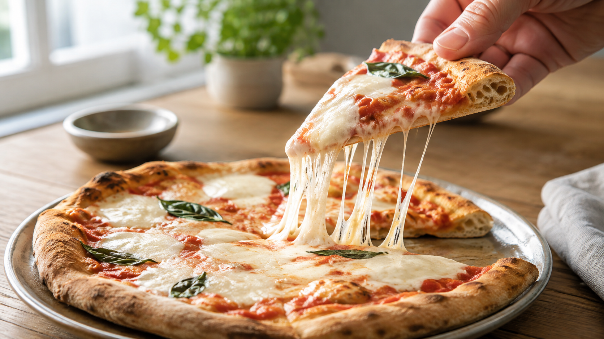

モッツァレラは、温めるとほどけて伸びる。糸を引くのは脂ではない
ピザを持ち上げると、チーズが細い糸になって皿まで伸びる。
同じように溶けるチーズでも、すっと切れるものがある。では、モッツァレラだけに何が起きているのだろう。
答えは、脂の量だけではない。モッツァレラの中には、製造するときに一方向へ整えられた、たんぱく質の網が残っている。加熱は、その網を壊すのではなく、引っ張れる程度まで柔らかくする。
今日の結論
モッツァレラが伸びるのは、温められた脂が糸になるからではない。
乳由来のたんぱく質が作る連続した骨組みが柔らかくなり、切れずに引き延ばされるからだ。脂と水分は、その骨組みの間で動き、たんぱく質同士が滑るのを助ける。
だから、伸びを出したいときは「とにかく高温にする」より、チーズ全体が温まり、まだ水分が残っている瞬間に引くほうが理にかなっている。
モッツァレラは、作る段階ですでに「伸びる向き」を持つ
牛乳を固めただけでは、あの長い糸は生まれない。
モッツァレラは、固めた乳を温めながら練り、何度も伸ばして作る。その間に、乳のたんぱく質が同じ方向へ並び、細長い束を作る。これがカゼインの繊維状ネットワークだ。
たとえるなら、ばらばらの短い毛糸を、同じ向きに重ねて一本の帯へまとめた状態に近い。実際に毛糸が入っているわけではないが、力をかけた方向へほどけながら伸びる点はよく似ている。
製造中の構造を観察した研究では、練って伸ばす工程のあと、たんぱく質の繊維がそろい、その間に水分と脂肪の通り道ができることが確認された。
つまり、ピザの上で初めて伸びる性質が作られるのではない。製造時に作られた構造が、再加熱によって動けるようになる。
加熱は、固い網を「動ける網」に変える
冷たいモッツァレラでは、脂が固く、たんぱく質の網も動きにくい。この状態で引っ張れば、伸びる前に裂ける。
温めると脂が液体に近づき、たんぱく質同士をつないでいる力もゆるむ。網は残ったまま、隣り合う層が滑りやすくなる。溶けて伸びる途中の構造を調べた研究では、温められた脂がたんぱく質の束を動きやすくし、引っ張られた方向へ構造が組み直されることが示されている。
ここが、ただ液体になるだけの「溶ける」と、細長い糸を保つ「伸びる」の違いだ。
完全な液体なら、持ち上げた瞬間に流れ落ちる。モッツァレラは、流れられる柔らかさと、切れずにつながる強さを同時に持つ。その中間に入ったとき、よく伸びる。
伸び方は、チーズの名前だけでは決まらない
同じモッツァレラでも、伸び方はそろわない。
たんぱく質の網をつなぐカルシウム、水分、脂肪、酸味、作ってからの日数によって、網の硬さと動きやすさが変わる。酸味とカルシウム量を調べた研究でも、カゼインの網がどれだけ水分を抱えるかによって、加熱後の流れ方と伸び方が変化している。
だから、フレッシュタイプが短く切れたり、水分が出たりしても失敗とは限らない。反対に、ピザ向けのモッツァレラが安定して糸を引くのは、加熱後の動きまで考えて水分や構造が整えられているからだ。
「モッツァレラなら全部同じ」と考えるより、作りたい料理に合う動きをする商品を選ぶほうが再現しやすい。
台所では、均一に温めてから持ち上げる
長い糸を出したいなら、チーズを一か所へ厚く積まない。細く裂くか薄く切り、料理の表面へ広げる。温度差が小さくなり、端だけ乾いて中央だけ冷たい状態を避けやすくなる。
表面が溶け、持ち上げたときに一枚の膜として動き始めたところが引きどきだ。焼き続けて水分が抜けすぎると、網は残っていても滑りにくくなり、途中で切れやすくなる。
大切なのは、最高温度ではなく状態を見ること。モッツァレラがつやを持ち、隣の部分とつながって動く。その短い時間を使う。
この考え方は、チーズ売り場でも使える
チーズを選ぶときは、「よく溶ける」と「よく伸びる」を分けて考えられる。
ソースへ溶かして全体へ広げたいなら、流れやすさが役立つ。ピザやホットサンドで糸を残したいなら、温めても連続した網を保つチーズが向く。モッツァレラやプロヴォローネのように、作る段階で練り伸ばすチーズが使われる理由もここにある。
この見方を覚えると、チーズを脂肪分だけで選ばなくなる。料理に必要なのが「流れること」なのか、「つながったまま伸びること」なのかを先に決めれば、売り場での選択が変わる。
まとめ
モッツァレラの糸を作っているのは、温められて動けるようになったカゼインの網だ。
製造時に繊維がそろい、加熱で脂と水分が動く。その結果、たんぱく質の骨組みが切れずに引き延ばされる。
次にピザを焼くときは、焦げ色だけを待たず、チーズ全体がつながって動く瞬間を見てみよう。伸びは、火力の強さより、構造がちょうど動ける時間に現れる。
参考文献
- Oberg CJ, McManus WR, McMahon DJ. Microstructure of Mozzarella Cheese During Manufacture. Food Structure. 1993;12(2):Article 12. https://digitalcommons.usu.edu/foodmicrostructure/vol12/iss2/12/
- Bast R, et al. Tensile testing to quantitate the anisotropy and strain hardening of mozzarella cheese. International Dairy Journal. 2015;44:6-14. https://doi.org/10.1016/j.idairyj.2014.12.006
- Yang SW, et al. Microstructural transformations in anisotropy and melt-stretch properties of low moisture part skim mozzarella cheese. International Dairy Journal. 2016;62:19-27. https://doi.org/10.1016/j.idairyj.2016.06.013
- Guinee TP, Feeney EP, Auty MAE, Fox PF. Effect of pH and calcium concentration on some textural and functional properties of mozzarella cheese. Journal of Dairy Science. 2002;85(7):1655-1669. https://pubmed.ncbi.nlm.nih.gov/12201515/
- Xia A, et al. Effects of thermal and stretching treatments on the physicochemical and functional properties of mozzarella cheese. Food Bioscience. 2024;62:105543. https://doi.org/10.1016/j.fbio.2024.105543